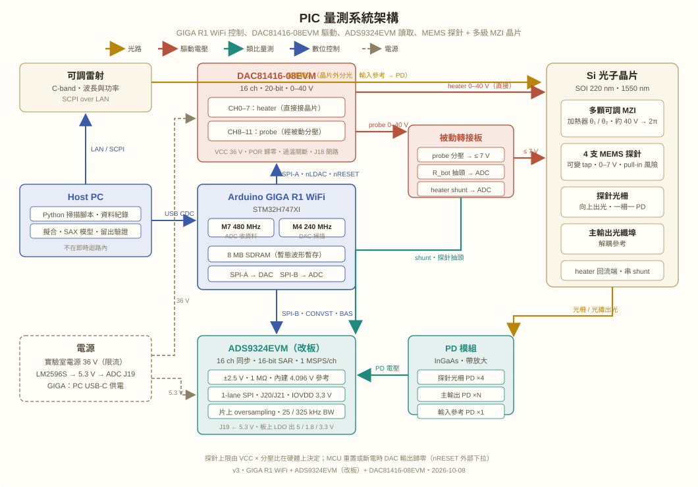
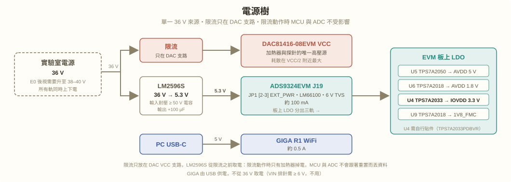

PIC-AI-Lab 階段一：量測系統規格 v3
MEMS 探針 + 多級 MZI 晶片的 DC 掃描與暫態擷取平台
PIC-AI-Lab 以 AI 自動量測 → 自動校正 → 光子運算三階段為目標；本文件記錄階段一量測系統（GIGA R1 WiFi 控制、DAC81416-08EVM 驅動、ADS9324EVM 讀取）的規格與修改重點，階段二、三的開發規則見 AGENT.md；論文規劃見《可切換 MEMS 探針的資訊價值》v2。
PIC-AI-Lab 三階段路線圖
三個階段共用同一套硬體與韌體骨架，差別只在 Host PC 端的決策層。後一階段不得放寬前一階段的任何安全規則；階段二、三的 AI 只下達目標，所有電壓碼值仍由 GIGA 韌體檢查後才寫入 DAC。
| 階段 | 目標 | 關鍵能力 | 狀態 |
|---|---|---|---|
| 1. AI 自動量測 | 無人值守完成 DC 相位掃描與暫態擷取 | 掃描序列自動規劃、安全限制（MAX_CODE、斜率、watchdog）、資料自動紀錄與擬合 | 進行中（本文件） |
| 2. AI 自動校正 | 自動找到每顆 MZI 的 P₂π、R_h 與探針工作點，並追蹤漂移 | 閉迴路控制（量測 → 模型 → 下一步電壓）、SAX 模型與留出驗證、溫度與雷射漂移補償、校正表版本化 | 規劃中 |
| 3. AI 光子運算 | 以校正好的 MMI / MZI 網路執行矩陣運算 | 權重 → 相位 → 電壓映射、批次同步更新、運算結果回讀與誤差分析、線上微調 | 規劃中 |
v3 相對 v2 的修改重點
三個決定改了系統的骨架，其餘沿用 v2：DAC 與保護設計不變，Host PC 分工不變，量測協定不變。
| 項目 | v2 | v3 | 原因 |
|---|---|---|---|
| ADC | ADS131M08（8 ch，24-bit ΔΣ，32 kSPS） | ADS9324（16 ch，16-bit SAR，1 MSPS/ch）on ADS9324EVM | 4-MZI 晶片需要的通道數超過 8；探針與加熱器的暫態響應需要 kHz 以上的頻寬。SNR 差距（102 dB vs 88 dB）以片上 oversampling 補回，對相位解析度不是瓶頸。 |
| ADC 板 | ADS131M08EVM（拆 PHI、改外供電） | ADS9324EVM，改板後走 J20/J21 單獨 SPI | BP-ADS9324 BoosterPack 缺貨。EVM 本為 FMC/FPGA 設計，需改 IOVDD 與斷開位準轉換器，見改板章節。 |
| MCU | ESP32-S3-DevKitC-1 | Arduino GIGA R1 WiFi（STM32H747XI） | 8 MB SDRAM 可暫存 1 MSPS 的完整暫態波形；SPI 可到 50 MHz；雙核分工（M4 跑 DAC 掃描、M7 收 ADC）。穩態掃描兩者皆可，差異在暫態擷取。 |
| MCU 到 PC | USB CDC | USB CDC（不變） | GIGA 的 USB-C 同為 full-speed，約 1 MB/s；高速資料先存 SDRAM 再倒出，不做即時串流。 |
| DAC | DAC81416-08EVM | 不變 | 16 通道足以覆蓋 4 顆 MZI 的加熱器與 4 支探針。 |
| 電源 | DAC VCC 41 V 實驗室電源；ADC EVM 拆 PHI 外供電 | 實驗室電源最大 60 V，VCC 預設 40 V；LM2596S 模組降到 5.3 V 給 ADS9324EVM J19；IOVDD 由板上 U4（TPS7A2033）產生；GIGA 走 USB | 40 V 由「原論文約 40 V 得 2π」反推，兩臂分攤每臂只需 π（約 28 V）；E0 量得 R_h 後再調整實際電壓。LM2596S-ADJ 輸入上限 40 V，電源若高於 40 V 需改用 LM2596HV 等級模組。 |
| 探針模型 | 開關（耦合／解耦） | 連續可調取光比 | 原團隊晶片上的探針由控制電壓連續設定距離，是弱可變 tap，不是 on-off 開關；韌體的 set_probe 要接受連續碼值，而非兩態。 |
PIC（MEMS 探針 + MZI）需求
待測晶片
- SOI 220 nm 平台，工作波長 1550 nm（C-band 可調雷射）。
- 原團隊現有晶片：小型 mesh，多顆可調 MZI 分光器加 4 支 MEMS 光探針；拓樸待以原團隊 netlist 確認。IEEE Access 2024 論文量的是其中單顆 MZI。
- 熱光加熱器：每顆 MZI 兩臂 θ₁／θ₂，約 40 V 得 2π；相位與功率成正比、與電壓平方成正比，所以擬合用實測功率。
- MEMS 探針：0 V 時耦合，約 6–7 V 解耦；中間電壓對應連續變化的取光比。有 pull-in 風險，上限由被動分壓決定。
- 光輸出：探針光柵向上出光（一柵一 PD），主輸出光纖埠作解耦參考，晶片外分光作輸入參考。
量測系統要回答的問題
- 單顆 MZI：耦合與解耦兩態的 φ₀ 差異是否超過量測不確定度（C2、C3）。
- 可變 tap：取光比對探針電壓的曲線、插入相位與損耗對下一級的影響。
- 多級：同一量測預算下，探針量測（P）相對外部量測（A）增加多少資訊（C1、C4）。
- 暫態（v3 新增可能性）：加熱器熱時間常數、探針機械響應與共振。
量測需求
| 量 | 來源 | 範圍 | 第一版（穩態 DC 掃描） | 後續（暫態） |
|---|---|---|---|---|
| 探針光柵光功率 | InGaAs PD 模組（帶放大）→ ADC | 0–2.5 V（TIA 增益配合） | 每點平均 M 筆，4 kSPS 等效 | ≤ 325 kHz 類比頻寬，1 MSPS |
| 主輸出／輸入參考光功率 | PD 模組 → ADC | 同上 | 同步取樣，用於正規化 | 同上 |
| 加熱器電流 | 低端 shunt → ADC | 0–數百 mV | 平均讀值，算實測功率 | 步階響應 |
| 加熱器電壓 | DAC 碼值換算（自檢校準） | 0–40 V | 校準後估計；DAC 誤差列入不確定度 | Kelvin 量測點（可選） |
| 探針電壓 | 分壓 R_bot 抽頭 → ADC | 0–7 V 經分壓後 ≤ 2.5 V | 上電驗證分壓比、紀錄實際值 | 致動波形 |
| 載台溫度 | 熱敏電阻 → MCU 內建 ADC | 室溫 ± 10 °C | 漂移紀錄 | — |
相位解析度估算（決定 ADC 規格的依據）
MZI 輸出 I ≈ (I₀/2)(1 + V cos φ)，正交點 dI/dφ ≈ I₀V/2。條紋擺幅佔半滿刻度時：
| ADS9324（原生 1 MSPS） | ADS9324 降頻到 4 kSPS | ADS131M08（4 kSPS） | |
|---|---|---|---|
| SNR／動態範圍 | 88 dB | 約 98–103 dB（片上 oversampling，實務 +10–15 dB） | 102 dB |
| rms 雜訊（相對滿刻度） | 4×10⁻⁵ | 約 1×10⁻⁵ | 8×10⁻⁶ |
| 單點相位解析度 | ≈ 80 µrad | ≈ 15–25 µrad | ≈ 16 µrad |
雷射功率漂移與熱漂移通常是 mrad 等級，比上面任何一格都大兩個數量級。兩顆 ADC 在穩態掃描下的相位解析度同一數量級，SNR 不是選型的決定因素；通道數與頻寬才是。
系統架構

docs/img/system-arch.svg）。電源樹見電源規劃。與 v2 同一骨架：沒有獨立安全板，探針上限由 VCC 與分壓比在硬體上決定，韌體改不掉；MCU 重置或斷電時 DAC 輸出歸零。改變的是中間兩塊：MCU 換成 GIGA R1，ADC 換成改板後的 ADS9324EVM；可調雷射改由 GIGA UART 以 SCPI 控制；被動轉接板預留 GIGA GPIO（MOS 開關）、分壓回授到 GIGA 內建 ADC，以及 VCC 參考輸入。責任分層
| 層級 | 負責 | 不負責 |
|---|---|---|
| Host PC | 掃描設定、資料紀錄、擬合、SAX 模型、凍結預測與留出驗證；階段二校正迴路與階段三運算排程的決策層 | 任何需要即時時序的動作（含雷射控制） |
| GIGA R1 韌體 | 掃描序列、DAC 寫入、settle 等待、ADC 取樣（CONVST 時序、BAS 中斷、DMA）、平均與標準差、暫態波形暫存於 SDRAM、MAX_CODE 與斜率限制、watchdog、上電自檢、雷射控制（UART SCPI）、被動板 GPIO（預留 MOS 開關）與分壓回授（內建 ADC） | 模型與決策 |
| DAC81416-08EVM、被動轉接、電源 | POR 與 nRESET 下拉使輸出歸零；probe 分壓給出硬體上限；電源限流限制加熱器總功率；DAC 過溫關斷 | —（最後一道防線，不依賴軟體） |
MCU：Arduino GIGA R1 WiFi
選用理由
- 8 MB SDRAM 走 FMC 匯流排（晶片內部記憶體控制器，與 ADC EVM 的 FMC 連接器無關），可連續暫存 1 MSPS 的 16 ch 波形約 0.25 s、100 kSPS 約 2.5 s。
- STM32H7 SPI 可到 50 MHz 以上；1-lane 讀 ADS9324 一幀約 280 bit，理論上限約 170 kSPS/幀。
- 雙核：M4 跑 DAC 掃描序列與安全限制，M7 專心收 ADC、搬資料。
- 兩組 SPI 露出：主排針 D10–D13 與獨立 SPI 排針 D89–D91。
- 3.3 V 邏輯。5 V tolerant 只代表耐壓，不代表能讀 1.8 V，所以 ADC 端仍要把 IOVDD 改成 3.3 V。
限制
- USB-C 為 full-speed CDC，約 1 MB/s；穩態掃描足夠，暫態先存 SDRAM 再傳。
- Arduino core 建在 Mbed OS 上，SPI DMA、timer 觸發要直接使用 STM32 HAL；Claude Code 開發時提供 STM32H747 reference manual 與 Arduino mbed core 的 HAL 存取方式。
- Wi-Fi 模組量測期間關閉，與 v2 同。
- ESP32-S3 版的 DAC81416 驅動需移植；暫存器邏輯共用，只重寫 SPI/DMA/timer 層。
腳位分配（規劃值，以 GIGA 官方 pinout 為準）
| 訊號 | GIGA 腳位 | 方向 | 說明 |
|---|---|---|---|
| DAC SCLK / COPI / CIPO | D13 / D11 / D12 | 出／出／入 | 主排針 SPI（SPI-A） |
| DAC nCS | D10 | 出 | |
| DAC nLDAC | D7 | 出 | 同步更新 |
| DAC nRESET | D6 | 出 | 外部下拉；MCU 重置或燒錄時腳位放開，DAC 自動進入 reset |
| DAC nALMOUT | D5 | 入（上拉） | 過溫或 CRC 錯誤 → 停掃描、碼值歸零 |
| ADC SCLK / SDI / SDOUT | D91 / D90 / D89 | 出／出／入 | 獨立 SPI 排針（SPI-B，SPI1） |
| ADC CSn | D8 | 出 | |
| ADC CONVST | D3 | 出 | 由硬體 timer 產生固定取樣時脈；腳位需有 timer 輸出功能 |
| ADC BAS（DRDY） | D2 | 入（中斷） | 觸發 DMA 讀幀 |
| ADC RESETn | D4 | 出 | 開機先拉低，電源穩定後放開 |
| ADC REFSEL | D9 | 出 | 1 = 內建 4.096 V；之後試 REF5040 只需改韌體 |
| ADC D0 | D14 | 入 | 備用：1-lane 模式資料腳位待 datasheet 確認 |
| 熱敏電阻 | A0 | 入 | 載台溫度 |
| 3V3 → ADC EVM TP9 | 3V3 排針 | 電源（備案） | 只在 U4 不焊時使用；主方案 IOVDD 由 EVM 板上 U4 產生 |
接到高壓相關控制的腳位（DAC nRESET、nLDAC），要確認 GIGA 開機、燒錄與 double-tap reset 期間不會短暫拉高。D0/D1 是 Serial1，避開。
ADC 選型：ADS9324 對 ADS131M08
| ADS131M08（v2） | ADS9324（v3） | |
|---|---|---|
| 架構／解析度 | ΔΣ，24-bit | SAR，16-bit |
| 通道 | 8 ch 同步 | 16 ch 同步（可設 2/4/8/16） |
| 取樣率 | ≤ 32 kSPS/ch | 1 MSPS/ch |
| 雜訊 | 102 dB DR（gain 1，4 kSPS） | SNR 88 dB 典型（1 MSPS）；片上 oversampling 可降頻換 SNR |
| 輸入範圍 | ±1.2 V / gain | ±2.5 / ±5 / ±6.25 / ±10 / ±12.5 V，每通道獨立；1 MΩ；CM ±12.5 V；可單端 |
| 類比前端 | 需外部 driver | 內建 PGA、clamp、LPF、driver；25 kHz／325 kHz 頻寬選項 |
| 參考 | 內建 1.2 V | 內建 4.096 V（15 ppm/°C），可外接 REF5040（EVM 上有） |
| 電源 | 3.3 V | AVDD 5 V + 1.8 V；IOVDD 1.8–3.3 V；約 200 mW |
| 介面 | SPI | SPI 1/2/4/8-lane；本系統用 1-lane |
| 數位功能 | 全域 chop、PGA 到 128 | oversampling 濾波、系統 offset/gain 校正、window comparator、data randomizer |
使用方式
- 輸入範圍 ±2.5 V：16-bit 要讓條紋吃滿刻度，TIA 增益配合調整；1 LSB ≈ 76 µV。
- 穩態掃描：類比頻寬 25 kHz，片上 oversampling 降到 4–32 kSPS，再由韌體做 M 筆平均。
- 暫態擷取：類比頻寬 325 kHz，依 SPI 速率選 50–170 kSPS 連續存 SDRAM，或 1 MSPS 配片上降頻。
- 資料量：16 ch × 16-bit = 32 B/幀；4 kSPS 時 128 kB/s，USB 可即時；32 kSPS 時 1 MB/s，邊緣，走 SDRAM 暫存。
- 參考：第一版用內建 4.096 V；REF5040（JP2）留作漂移實驗。
1-lane 模式下轉換資料從 SDOUT 還是 D0 送出，尚未在 datasheet 確認；接線時 D0 一併拉到 MCU。暫存器讀寫走 SDOUT 是確定的。
ADS9324EVM 改板重點
EVM（DC392，SLVUDB0A）為 FMC + TSWDC155EVM 設計：電源從 FMC 的 3.3 V 升壓，IOVDD 出廠 1.8 V，SPI 經 TXV0108 位準轉換器接到 FMC。要接 3.3 V MCU，必須做以下五項。IOVDD 主方案為 TI 文件的 MCU 模式：板上 U4 貼 TPS7A2033 自行產生 3.3 V，整板只需一個 5.3 V 輸入；「TP9 外接 3.3 V」改列備案。
- 電源改外接JP1 跳到 [2-3] EXT_PWR；J19 端子台接 5.2–5.5 V（快速指南寫 J7，為舊標號，以原理圖與 BOM 的 J19 為準）。升壓電路被旁路，三顆 LDO 直接吃此電壓，AVDD_5V、AVDD_1V8、1V8_FMC 皆正常。整板不到 100 mA。
- IOVDD 改 3.3 VU4 貼 TPS7A2033PDBVR（SOT23-5，焊墊與 C40/C46 已在板上）、R76 貼 0 Ω（0805）、R75 拆掉。U4 輸入為 LDO_IN，AVDD 與 IOVDD 同源上電。備案（不焊 U4）：只拆 R75，外部 3.3 V 接 TP9；IOVDD 連同 U10–U12 的 VCCB 側只需十幾 mA。
- 斷開位準轉換器的輸出FMC 不插時 U11/U12 的 A 側浮接，B 側會亂驅動 ADC 腳位。拆以下 0402 0 Ω：U11 B 側 R86（CONVST）、R87（SCLK）、R88（SDI）、R89（CSn）、R90（RESETn）、R91（REFSEL）；U12 B 側 R93（CSn_LP）、R94（SCLK_LP）、R95（CONVST_LP）。R92（BAS）、R96（SDOUT）是 ADC 往外送，可留。拆完以電表確認 J21 的 SCLK/SDI/CSn 對 U11 已斷開。
- 補上浮接的控制腳R67/R68/R69 出廠未貼，REFSEL 與 RESETn 沒有上拉。兩者都由 MCU GPIO 驅動：REFSEL 在 RESETn 放開前先設定；RESETn 開機拉低，所有電源軌穩定後放開。
- 接線依下表接 J20/J21，地線用 J17/J18。排線 ≤ 10 cm，SCLK 先跑 10–20 MHz 看波形再加速，SCLK 在 MCU 端串 22–33 Ω，每條訊號旁配一條 GND 回流。
J20 / J21 接線表
| EVM 腳 | 訊號 | 方向 | GIGA |
|---|---|---|---|
| J21-4 | SCLK | ← MCU | D91 |
| J21-5 | SDI | ← MCU | D90 |
| J21-3 | SDOUT | → MCU | D89 |
| J21-6 | CSn | ← MCU | D8 |
| J20-1 | CONVST | ← MCU | D3（timer） |
| J20-2 | BAS（DRDY） | → MCU | D2（中斷） |
| J21-7 | RESETn | ← MCU | D4 |
| J21-8 | REFSEL | ← MCU | D9 |
| J20-3 | D0 | → MCU | D14（備用） |
| TP9 | IOVDD | 電源（備案） | 3V3，僅 U4 不焊時 |
| J17 / J18 | GND | GND | |
| J19 | 5.3 V | 電源 | LM2596S 模組（自 40 V 降壓） |
上電與 ESD 倒灌
ADC 的 I/O 腳有 ESD 二極體接到 IOVDD。若 IOVDD 未上電而 MCU 已把 SCLK/CSn 拉高，電流會經二極體倒灌進 IOVDD 網路。主方案下 IOVDD 與 AVDD 同源，兩者順序由板上 LDO 決定；MCU 走 USB 是另一個電源，所以規定 EVM 先上電、GIGA 後接，且韌體在讀到 IOVDD 存在（或啟動後固定延遲）之前，所有 ADC 相關 GPIO 保持 Hi-Z。備案（TP9 ← MCU 3V3）時 MCU 與 IOVDD 天生同步，但 IOVDD 與 AVDD 的順序改由 datasheet 的 power sequencing 決定是否可接受。
韌體初始化順序
- GPIO：CSn=1、CONVST=0、REFSEL=1、RESETn=0。
- 等待電源穩定（依 datasheet）。
- RESETn=1，等待 reset 後的啟動時間。
- 讀 device ID 暫存器，確認 SPI 通。
- 設定各通道輸入範圍、類比頻寬、oversampling、lane 數 = 1。
- 啟動 CONVST timer，BAS 中斷觸發 DMA 讀幀。
其他供電路徑（不採用，留作紀錄）
- 3.3 V 焊到 3V3_FMC 網路（C34 焊墊）走板上 TPS61070 升壓：可行，但要焊電容焊墊，且升壓器雜訊回到電源樹。
- USB 5 V 接 J19：扣掉 LM66100 與 LDO 壓降後 AVDD 只剩約 4.85 V，邊緣，不用。
- 40 V → LDO → 5 V：壓差 35 V，0.5 A 時耗散約 17 W，不可行；第一級必須是降壓模組。
通道配置
ADC（16 ch）
| 通道 | 第一版：單顆 MZI 量測鏈 | 完整晶片（4 支探針，多顆 MZI） |
|---|---|---|
| CH1–CH4 | 探針 ①② 光柵 PD（CH1、CH2）；主輸出 PD（CH3）；輸入參考 PD（CH4） | 探針 ①–④ 光柵 PD |
| CH5–CH8 | heater ①② shunt（CH5、CH6）；探針 ①② 抽頭電壓（CH7、CH8） | 主輸出 PD ×N（依晶片輸出埠數，≤ 4） |
| CH9 | 備用 | 輸入參考 PD |
| CH10–CH13 | 備用 | 探針 ①–④ 抽頭電壓 |
| CH14–CH16 | 備用 | heater shunt ×3（其餘加熱器以校準碼值換算） |
完整晶片若要實測每支加熱器電流（最多 8 支），16 通道不夠；屆時第二顆 ADS9324 掛同一 SPI、獨立 CSn 與共用 CONVST，或在第一版沿用「校準碼值換算」。
DAC81416-08EVM（16 ch）
| 通道 | 用途 | 範圍 |
|---|---|---|
| CH0–CH7 | 加熱器（最多 4 顆 MZI × 2 臂） | 0–40 V，直接接晶片，低端 shunt |
| CH8–CH11 | MEMS 探針 ①–④ | 0–40 V 經被動分壓 → 0–7 V；MAX_CODE + 斜率限制；連續碼值 |
| CH12–CH15 | 備用 | dither / 第二晶片 |
DAC81416-08EVM 與安全設計（沿用 v2）
- VCC 預設 40 V（電源最大 60 V），由實驗室電源供給並限流，限制加熱器總功率。E0 量得 R_h 與 V₂π 後調整實際電壓；電壓一變，分壓比、MAX_CODE 與 LM2596 模組等級一併重算。
- 加熱器通道 0–40 V 直接輸出；相位 ∝ 功率 ∝ V²，低電壓區每碼值相位極小，擬合自變數用實測功率。
- 探針通道設 0–40 V 範圍，經每通道兩顆電阻被動分壓到 0–7 V；DAC 輸出不可能超過 VCC，所以探針上限只由 VCC 與電阻比決定。分壓比與 MAX_CODE 在量到解耦電壓與 pull-in 餘裕之後才定案。
- J18 開路、外部 SPI；nRESET 外部下拉，MCU 重置、燒錄或斷電時輸出歸零；POR 歸零；過溫關斷。
- 沒有 MUX：探針電壓由 R_bot 抽頭直接進 ADC，加熱器電流由 shunt 進 ADC。
- DAC 耗散在 VCC/2 附近最大，約為 40 V 時加熱器功率的 26%；R_h 待 E0 量測後定案 shunt 阻值與是否需要外加驅動級。
電源規劃

各軌規格
| 軌 | 來源 | 電壓 | 電流 | 負載 | 備註 |
|---|---|---|---|---|---|
| DAC VCC | 實驗室電源 → 限流 | 預設 40 V（電源最大 60 V） | 依 R_h，E0 後定 | 加熱器、探針分壓、DAC 輸出級耗散 | 限流值 = 加熱器總功率上限；DAC 耗散在 VCC/2 附近最大 |
| EVM LDO_IN | LM2596S 模組 | 5.3 V（J19 容許 5.2–5.5 V） | 約 100 mA | ADS9324 + 板上 LDO | 150 kHz 漣波 30–50 mVpp，經 TPS7A2050 PSRR 後剩幾十 µV |
| AVDD 5 V / 1.8 V | EVM U5 / U6 | 5.0 / 1.8 V | 約 40 mA / 少量 | ADC 類比 | 不動 |
| IOVDD | EVM U4（貼 TPS7A2033） | 3.3 V | 十幾 mA | ADC 數位 I/O、U10–U12 VCCB | 備案：拆 R75，TP9 ← GIGA 3V3 |
| GIGA | PC USB-C | 5 V | 約 0.5 A | MCU、SDRAM、Wi-Fi 模組 | 不從高壓取電；VIN 排針需 ≥ 6 V，不用 |
LM2596S 模組使用規範
- LM2596S-ADJ 輸入上限 40 V（絕對最大 45 V），VCC 40 V 時已無餘裕；電源高於 40 V 一律改用 60 V 輸入等級的模組（LM2596HV 相容品、XL7005A、MP4560、LM5164）並實測起動。
- 確認模組輸入電解電容耐壓 ≥ 80 V；確認板上 IC 不是只有 35 V 輸入的替代品。
- 輸入端加 TVS（SMAJ43A）與 100 µF；輸出並 100 µF，必要時再加 10 µH + 47 µF 的 LC。
- 電位器先在空載調到 5.3 V，接上 EVM 後再量一次，確認後固定電位器。調整期間不要接 EVM：LDO_IN 的 6 V TVS 是鉗位不是保護，調過頭會發燙。
- 模組 GND 只在 J19 端與 EVM 接一點，不另外與其他板互連，避免開關回流電流繞進類比地。
- 備案第二顆模組（3.3 V → TP9）：串 10 µH + 10 µF 再進 TP9；僅在 U4 不焊時使用。
上電順序
- 高壓電源開（預設 40 V）：限流支路與 LM2596S 同時得電，EVM 三軌由板上 LDO 依序建立；DAC nRESET 被下拉，輸出為 0 V。
- GIGA 接 USB 或重置：所有 ADC／DAC 相關 GPIO 預設 Hi-Z。
- 韌體確認 EVM 已上電（固定延遲或讀 device ID 前的 GPIO 檢查），再依初始化順序設定 GPIO 並放開 RESETn。
- 關機反向：先停掃描、DAC 歸零，再斷高壓電源；GIGA 最後。
驗收順序
- EVM 改板後只上 J19 與 TP9，不接 MCU 訊號：量 TP8（5 V）、TP7（1.8 V）、TP9（3.3 V）。
- 接 MCU，照初始化順序讀 device ID。
- 輸入短路（J1–J16 跳帽），量雜訊直方圖，比對 datasheet；分別在 25 kHz 與 325 kHz 頻寬、不同 OSR 下記錄。
- DAC81416 餵已知電壓進 ADC，量線性度與增益；同時驗證 SPI-A 與 SPI-B 同時工作無衝突。
- 假負載取代晶片：探針分壓上限、MAX_CODE、斜率限制、nRESET 下拉歸零、watchdog 逾時歸零。
- 接 TIA 與 PD，雷射開，跑單顆加熱器 I-V 與 P₂π（E0）。
- 探針慢速升壓找解耦電壓與 pull-in 餘裕，之後定分壓比。
- 暫態擷取：heater 步階、探針步階，SDRAM 緩衝與 USB 倒出不掉資料。
待確認事項
- ADS9324 datasheet：power sequencing、reset 時序、1-lane 模式資料輸出腳位（SDOUT 或 D0）、oversampling 設定與 24-bit 輸出格式。
- GIGA R1 官方 pinout：D3 是否有 timer 輸出、D2 中斷、D89–D91 對應 SPI1、開機與燒錄期間各腳位狀態。
- ADS9324EVM 改板後實測三軌電壓與 IOVDD 電流；LM2596S 模組實品的輸入電容耐壓與 IC 來源。
- ADS9324 datasheet：AVDD 與 IOVDD 的 power sequencing 要求（決定備案 TP9 方案是否可用）。
- 原團隊 netlist：MZI 數量與連接、探針位置、輸出埠數（決定 PD 數與 ADC 通道）。
- 探針取光比對電壓的曲線是否單調、是否有遲滯（決定
set_probe的碼值語意）。 - 加熱器電阻 R_h（決定 shunt、電流與 DAC 耗散）。
- BP-ADS9324 供貨恢復時是否改回 BoosterPack（省掉改板）。
- ADS9324C（2026/6，80 Vpp 共模差動前端）是否適用於探針共模偏高的量測。